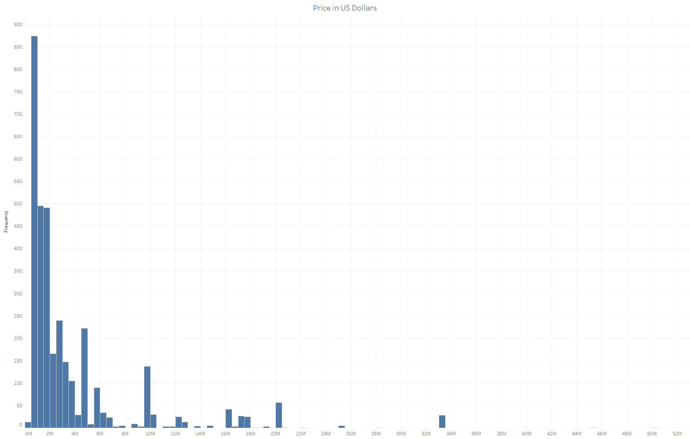
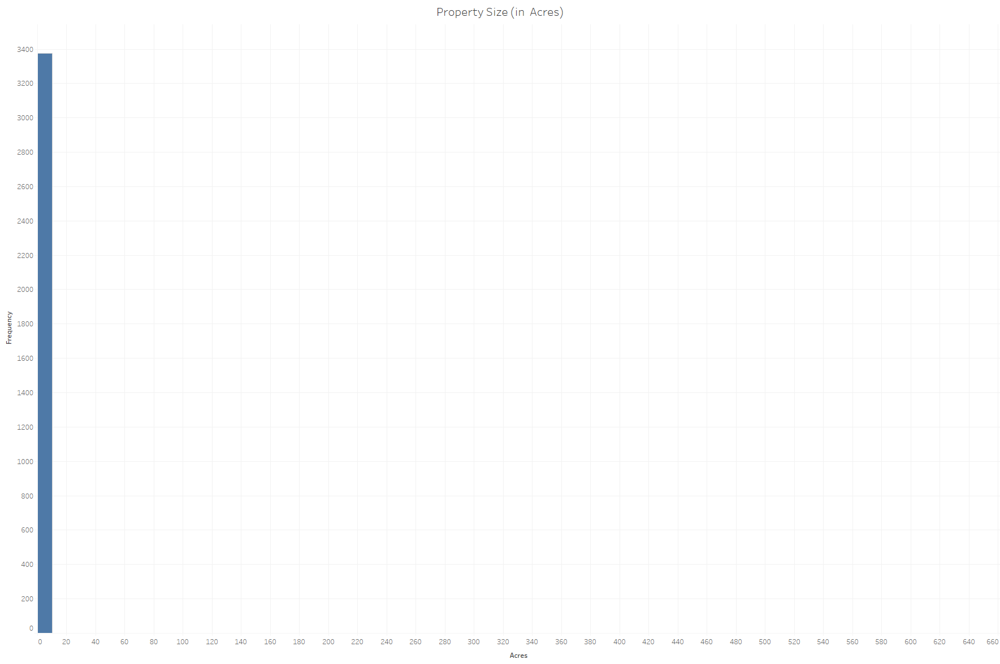
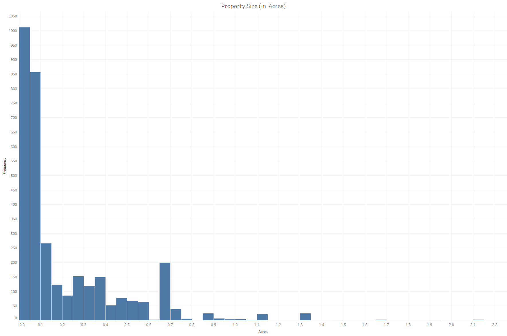
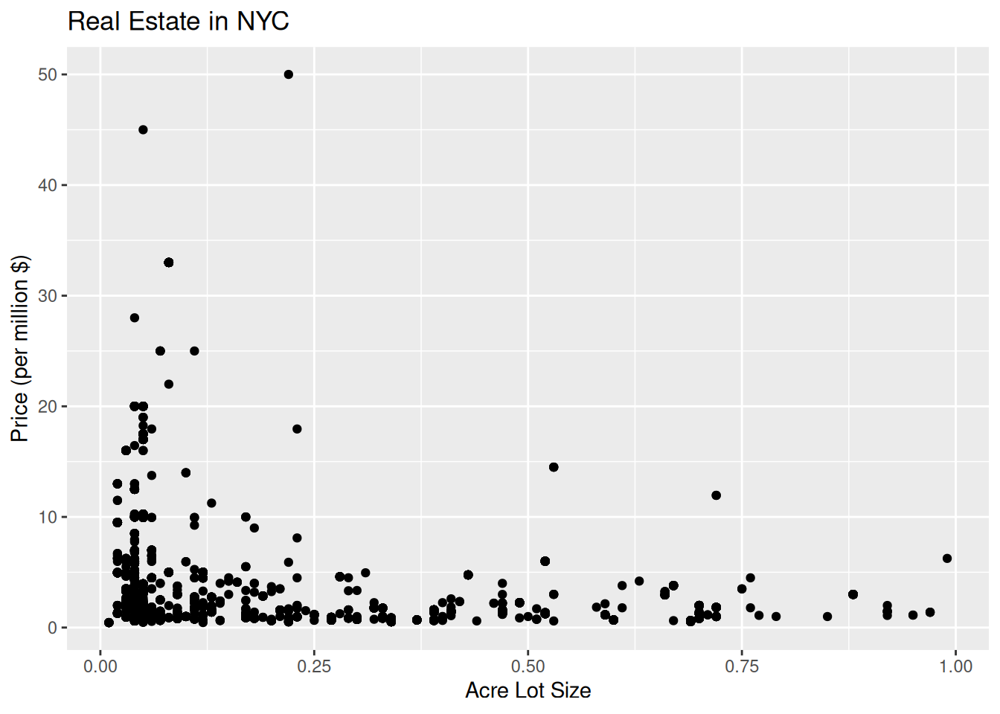

In this project, I am analyzing the relationship between the amount of the acres of real estate in New York City to the cost of the property. The common relationship between those two factors of most real estate in the US and around the world is positive where the larger the real estate property the higher the price. However, there may be additional variables and factors that may alter the common positive relationship. The focus of this project is to only show whether or not the prices of real estate prices increases with property size while keeping all other variables/factors as controls.
# Downloading packages -------------------------------------------------------
- Downloading readr from CRAN ... OK [829.4 Kb in 0.39s]
- Downloading clipr from CRAN ... OK [49.1 Kb in 0.36s]
- Downloading crayon from CRAN ... OK [158.5 Kb in 0.39s]
- Downloading hms from CRAN ... OK [94.2 Kb in 0.31s]
- Downloading pkgconfig from CRAN ... OK [17.1 Kb in 0.32s]
- Downloading vctrs from CRAN ... OK [1.2 Mb in 0.38s]
- Downloading tibble from CRAN ... OK [656 Kb in 0.31s]
- Downloading fansi from CRAN ... OK [299.4 Kb in 0.32s]
- Downloading magrittr from CRAN ... OK [215.3 Kb in 0.34s]
- Downloading pillar from CRAN ... OK [410.2 Kb in 0.31s]
- Downloading utf8 from CRAN ... OK [143.4 Kb in 0.76s]
- Downloading vroom from CRAN ... OK [924.2 Kb in 0.33s]
- Downloading bit64 from CRAN ... OK [470.6 Kb in 0.33s]
- Downloading bit from CRAN ... OK [1.1 Mb in 0.37s]
- Downloading tidyselect from CRAN ... OK [216.9 Kb in 0.37s]
- Downloading withr from CRAN ... OK [211.6 Kb in 0.3s]
- Downloading tzdb from CRAN ... OK [629.3 Kb in 0.32s]
- Downloading cpp11 from CRAN ... OK [281.8 Kb in 0.31s]
- Downloading progress from CRAN ... OK [82.6 Kb in 0.31s]
- Downloading prettyunits from CRAN ... OK [151.5 Kb in 0.3s]
Successfully downloaded 20 packages in 9.3 seconds.
The following package(s) will be installed:
- bit [4.5.0.1]
- bit64 [4.5.2]
- clipr [0.8.0]
- cpp11 [0.5.1]
- crayon [1.5.3]
- fansi [1.0.6]
- hms [1.1.3]
- magrittr [2.0.3]
- pillar [1.10.0]
- pkgconfig [2.0.3]
- prettyunits [1.2.0]
- progress [1.2.3]
- readr [2.1.5]
- tibble [3.2.1]
- tidyselect [1.2.1]
- tzdb [0.4.0]
- utf8 [1.2.4]
- vctrs [0.6.5]
- vroom [1.6.5]
- withr [3.0.2]
These packages will be installed into "~/work/nyc-real-est-analysis/nyc-real-est-analysis/renv/library/R-4.2/x86_64-pc-linux-gnu".
# Installing packages --------------------------------------------------------
- Installing clipr ... OK [installed binary and cached in 0.2s]
- Installing crayon ... OK [installed binary and cached in 0.21s]
- Installing pkgconfig ... OK [installed binary and cached in 0.2s]
- Installing vctrs ... OK [installed binary and cached in 0.35s]
- Installing hms ... OK [installed binary and cached in 0.34s]
- Installing fansi ... OK [installed binary and cached in 0.21s]
- Installing magrittr ... OK [installed binary and cached in 0.22s]
- Installing utf8 ... OK [installed binary and cached in 0.21s]
- Installing pillar ... OK [installed binary and cached in 0.41s]
- Installing tibble ... OK [installed binary and cached in 0.48s]
- Installing bit ... OK [installed binary and cached in 0.23s]
- Installing bit64 ... OK [installed binary and cached in 0.24s]
- Installing withr ... OK [installed binary and cached in 0.21s]
- Installing tidyselect ... OK [installed binary and cached in 0.33s]
- Installing cpp11 ... OK [installed binary and cached in 0.22s]
- Installing tzdb ... OK [installed binary and cached in 0.23s]
- Installing prettyunits ... OK [installed binary and cached in 0.2s]
- Installing progress ... OK [installed binary and cached in 0.34s]
- Installing vroom ... OK [installed binary and cached in 0.56s]
- Installing readr ... OK [installed binary and cached in 0.5s]
Successfully installed 20 packages in 6.4 seconds.
# Downloading packages -------------------------------------------------------
- Downloading tidyverse from CRAN ... OK [415.4 Kb in 0.53s]
- Downloading broom from CRAN ... OK [1.8 Mb in 0.38s]
- Downloading backports from CRAN ... OK [111.3 Kb in 0.31s]
- Downloading dplyr from CRAN ... OK [1.4 Mb in 1.0s]
- Downloading generics from CRAN ... OK [69.9 Kb in 0.3s]
- Downloading purrr from CRAN ... OK [471.9 Kb in 0.31s]
- Downloading stringr from CRAN ... OK [296.5 Kb in 0.31s]
- Downloading stringi from CRAN ... OK [3.1 Mb in 0.49s]
- Downloading tidyr from CRAN ... OK [1.1 Mb in 0.31s]
- Downloading conflicted from CRAN ... OK [53.5 Kb in 0.3s]
- Downloading dbplyr from CRAN ... OK [1.2 Mb in 0.32s]
- Downloading blob from CRAN ... OK [45 Kb in 0.3s]
- Downloading DBI from CRAN ... OK [860.9 Kb in 0.33s]
- Downloading dtplyr from CRAN ... OK [344.9 Kb in 0.31s]
- Downloading data.table from CRAN ... OK [2.3 Mb in 0.39s]
- Downloading forcats from CRAN ... OK [409.8 Kb in 0.31s]
- Downloading ggplot2 from CRAN ... OK [4.7 Mb in 0.32s]
- Downloading gtable from CRAN ... OK [213 Kb in 0.31s]
- Downloading isoband from CRAN ... OK [1.6 Mb in 0.31s]
- Downloading scales from CRAN ... OK [682.7 Kb in 0.41s]
- Downloading farver from CRAN ... OK [1.4 Mb in 0.97s]
- Downloading labeling from CRAN ... OK [57.8 Kb in 0.65s]
- Downloading munsell from CRAN ... OK [235.8 Kb in 0.31s]
- Downloading colorspace from CRAN ... OK [2.5 Mb in 0.34s]
- Downloading RColorBrewer from CRAN ... OK [51.8 Kb in 0.3s]
- Downloading viridisLite from CRAN ... OK [1.2 Mb in 0.43s]
- Downloading googledrive from CRAN ... OK [1.8 Mb in 0.32s]
- Downloading gargle from CRAN ... OK [741.7 Kb in 0.31s]
- Downloading httr from CRAN ... OK [454.2 Kb in 0.31s]
- Downloading curl from CRAN ... OK [757.2 Kb in 0.32s]
- Downloading openssl from CRAN ... OK [1.2 Mb in 0.39s]
- Downloading askpass from CRAN ... OK [21.1 Kb in 0.37s]
- Downloading sys from CRAN ... OK [38.6 Kb in 0.33s]
- Downloading uuid from CRAN ... OK [47 Kb in 0.3s]
- Downloading googlesheets4 from CRAN ... OK [493.8 Kb in 0.38s]
- Downloading cellranger from CRAN ... OK [98.3 Kb in 0.37s]
- Downloading rematch from CRAN ... OK [15.1 Kb in 0.42s]
- Downloading ids from CRAN ... OK [117.5 Kb in 0.32s]
- Downloading rematch2 from CRAN ... OK [43.2 Kb in 0.3s]
- Downloading haven from CRAN ... OK [376.1 Kb in 0.31s]
- Downloading lubridate from CRAN ... OK [941.1 Kb in 0.32s]
- Downloading timechange from CRAN ... OK [169.2 Kb in 0.31s]
- Downloading modelr from CRAN ... OK [194.9 Kb in 0.78s]
- Downloading ragg from CRAN ... OK [598.5 Kb in 0.31s]
- Downloading systemfonts from CRAN ... OK [259.6 Kb in 0.32s]
- Downloading textshaping from CRAN ... OK [122.8 Kb in 0.3s]
- Downloading readxl from CRAN ... OK [847.1 Kb in 0.31s]
- Downloading reprex from CRAN ... OK [480.7 Kb in 0.32s]
- Downloading callr from CRAN ... OK [423.8 Kb in 0.38s]
- Downloading processx from CRAN ... OK [425.7 Kb in 0.31s]
- Downloading ps from CRAN ... OK [456.9 Kb in 0.37s]
- Downloading rstudioapi from CRAN ... OK [299 Kb in 0.37s]
- Downloading rvest from CRAN ... OK [286.8 Kb in 0.31s]
- Downloading selectr from CRAN ... OK [477.1 Kb in 0.31s]
- Downloading xml2 from CRAN ... OK [265.2 Kb in 0.77s]
Successfully downloaded 55 packages in 28 seconds.
The following package(s) will be installed:
- askpass [1.2.1]
- backports [1.5.0]
- blob [1.2.4]
- broom [1.0.7]
- callr [3.7.6]
- cellranger [1.1.0]
- colorspace [2.1-1]
- conflicted [1.2.0]
- curl [6.0.1]
- data.table [1.16.4]
- DBI [1.2.3]
- dbplyr [2.5.0]
- dplyr [1.1.4]
- dtplyr [1.3.1]
- farver [2.1.2]
- forcats [1.0.0]
- gargle [1.5.2]
- generics [0.1.3]
- ggplot2 [3.5.1]
- googledrive [2.1.1]
- googlesheets4 [1.1.1]
- gtable [0.3.6]
- haven [2.5.4]
- httr [1.4.7]
- ids [1.0.1]
- isoband [0.2.7]
- labeling [0.4.3]
- lubridate [1.9.4]
- modelr [0.1.11]
- munsell [0.5.1]
- openssl [2.3.0]
- processx [3.8.4]
- ps [1.8.1]
- purrr [1.0.2]
- ragg [1.3.3]
- RColorBrewer [1.1-3]
- readxl [1.4.3]
- rematch [2.0.0]
- rematch2 [2.1.2]
- reprex [2.1.1]
- rstudioapi [0.17.1]
- rvest [1.0.4]
- scales [1.3.0]
- selectr [0.4-2]
- stringi [1.8.4]
- stringr [1.5.1]
- sys [3.4.3]
- systemfonts [1.1.0]
- textshaping [0.4.1]
- tidyr [1.3.1]
- tidyverse [2.0.0]
- timechange [0.3.0]
- uuid [1.2-1]
- viridisLite [0.4.2]
- xml2 [1.3.6]
These packages will be installed into "~/work/nyc-real-est-analysis/nyc-real-est-analysis/renv/library/R-4.2/x86_64-pc-linux-gnu".
# Installing packages --------------------------------------------------------
- Installing backports ... OK [installed binary and cached in 0.21s]
- Installing generics ... OK [installed binary and cached in 0.21s]
- Installing dplyr ... OK [installed binary and cached in 0.57s]
- Installing purrr ... OK [installed binary and cached in 0.35s]
- Installing stringi ... OK [installed binary and cached in 0.35s]
- Installing stringr ... OK [installed binary and cached in 0.37s]
- Installing tidyr ... OK [installed binary and cached in 0.58s]
- Installing broom ... OK [installed binary and cached in 0.62s]
- Installing conflicted ... OK [installed binary and cached in 0.33s]
- Installing blob ... OK [installed binary and cached in 0.34s]
- Installing DBI ... OK [installed binary and cached in 0.32s]
- Installing dbplyr ... OK [installed binary and cached in 0.84s]
- Installing data.table ... OK [installed binary and cached in 0.33s]
- Installing dtplyr ... OK [installed binary and cached in 0.64s]
- Installing forcats ... OK [installed binary and cached in 0.35s]
- Installing gtable ... OK [installed binary and cached in 0.37s]
- Installing isoband ... OK [installed binary and cached in 0.25s]
- Installing farver ... OK [installed binary and cached in 0.24s]
- Installing labeling ... OK [installed binary and cached in 0.21s]
- Installing colorspace ... OK [installed binary and cached in 0.32s]
- Installing munsell ... OK [installed binary and cached in 0.26s]
- Installing RColorBrewer ... OK [installed binary and cached in 0.21s]
- Installing viridisLite ... OK [installed binary and cached in 0.22s]
- Installing scales ... OK [installed binary and cached in 0.39s]
- Installing ggplot2 ... OK [installed binary and cached in 0.78s]
- Installing curl ... OK [installed binary and cached in 0.24s]
- Installing sys ... OK [installed binary and cached in 0.21s]
- Installing askpass ... OK [installed binary and cached in 0.21s]
- Installing openssl ... OK [installed binary and cached in 0.26s]
- Installing httr ... OK [installed binary and cached in 0.22s]
- Installing gargle ... OK [installed binary and cached in 0.39s]
- Installing uuid ... OK [installed binary and cached in 0.21s]
- Installing googledrive ... OK [installed binary and cached in 0.68s]
- Installing rematch ... OK [installed binary and cached in 0.21s]
- Installing cellranger ... OK [installed binary and cached in 0.21s]
- Installing ids ... OK [installed binary and cached in 0.23s]
- Installing rematch2 ... OK [installed binary and cached in 0.46s]
- Installing googlesheets4 ... OK [installed binary and cached in 0.68s]
- Installing haven ... OK [installed binary and cached in 0.51s]
- Installing timechange ... OK [installed binary and cached in 0.21s]
- Installing lubridate ... OK [installed binary and cached in 0.35s]
- Installing modelr ... OK [installed binary and cached in 0.58s]
- Installing systemfonts ... OK [installed binary and cached in 0.32s]
- Installing textshaping ... OK [installed binary and cached in 0.35s]
- Installing ragg ... OK [installed binary and cached in 0.35s]
- Installing readxl ... OK [installed binary and cached in 0.24s]
- Installing ps ... OK [installed binary and cached in 0.22s]
- Installing processx ... OK [installed binary and cached in 0.23s]
- Installing callr ... OK [installed binary and cached in 0.24s]
- Installing rstudioapi ... OK [installed binary and cached in 0.21s]
- Installing reprex ... OK [installed binary and cached in 0.38s]
- Installing selectr ... OK [installed binary and cached in 0.38s]
- Installing xml2 ... OK [installed binary and cached in 0.33s]
- Installing rvest ... OK [installed binary and cached in 0.39s]
- Installing tidyverse ... OK [installed binary and cached in 0.22s]
Successfully installed 55 packages in 21 seconds.
# Downloading packages -------------------------------------------------------
- Downloading stargazer from CRAN ... OK [601.4 Kb in 0.32s]
Successfully downloaded 1 package in 0.4 seconds.
The following package(s) will be installed:
- stargazer [5.2.3]
These packages will be installed into "~/work/nyc-real-est-analysis/nyc-real-est-analysis/renv/library/R-4.2/x86_64-pc-linux-gnu".
# Installing packages --------------------------------------------------------
- Installing stargazer ... OK [installed binary and cached in 0.22s]
Successfully installed 1 package in 0.24 seconds.
The following package(s) will be installed:
- ggplot2 [3.5.1]
These packages will be installed into "~/work/nyc-real-est-analysis/nyc-real-est-analysis/renv/library/R-4.2/x86_64-pc-linux-gnu".
# Installing packages --------------------------------------------------------
- Installing ggplot2 ... OK [linked from cache]
Successfully installed 1 package in 5.7 milliseconds.
library(readr)library(tidyverse)real_estate <-read_csv("realtor-data.csv")# Filter real estate in NYC and remove entire row with null in any column for a one-to-one relationship between x and yreal_estate_nyc <- real_estate %>%filter(state =="New York") %>%filter(city =="New York City") %>%na.omit()cat("Table 1: Data for Demonstration Project")
Table 1: Data for Demonstration Project
real_estate
# A tibble: 904,966 × 10
status bed bath acre_lot city state zip_code house_size prev_sold_date
<chr> <dbl> <dbl> <dbl> <chr> <chr> <dbl> <dbl> <date>
1 for_sale 3 2 0.12 Adjun… Puer… 601 920 NA
2 for_sale 4 2 0.08 Adjun… Puer… 601 1527 NA
3 for_sale 2 1 0.15 Juana… Puer… 795 748 NA
4 for_sale 4 2 0.1 Ponce Puer… 731 1800 NA
5 for_sale 6 2 0.05 Mayag… Puer… 680 NA NA
6 for_sale 4 3 0.46 San S… Puer… 612 2520 NA
7 for_sale 3 1 0.2 Ciales Puer… 639 2040 NA
8 for_sale 3 2 0.08 Ponce Puer… 731 1050 NA
9 for_sale 2 1 0.09 Ponce Puer… 730 1092 NA
10 for_sale 5 3 7.46 Las M… Puer… 670 5403 NA
# ℹ 904,956 more rows
# ℹ 1 more variable: price <dbl>
The data used for the project is pulled kaggle where it was extracted from www.realtor.com, a real estate listing website operated by the News Corp subsidiary Move, Inc. and based in Santa Clara, California and one of the most visited real estate websites. The data lists details of each property including number of bedrooms and bathrooms, land size in acres, city, state, zip code, square feet of house size, previous sold date, and current listing or recently sold price.The data that was extracted and will be used in this project consists of historical real estate listing records from realtor.com
Summary Statistices of the variables
# load the data# summary statistics of Y variablecat("Table 2: Summary statistics of Real Estate Price")
Table 2: Summary statistics of Real Estate Price
summary(real_estate_nyc$price)
Min. 1st Qu. Median Mean 3rd Qu. Max.
319000 990000 1775000 3799384 4047500 50000000
# variance and standard deviation of Y variablecat("Table 3: Variance of Real Estate Price")
Table 3: Variance of Real Estate Price
var(real_estate_nyc$price)
[1] 2.6595e+13
cat("Table 4: Standard deviation of Real Estate Price")
Table 4: Standard deviation of Real Estate Price
sd(real_estate_nyc$price)
[1] 5157034
# summary statistics of X variablecat("Table 5: Summary statistics of Real Estate Property Size")
Table 5: Summary statistics of Real Estate Property Size
summary(real_estate_nyc$acre_lot)
Min. 1st Qu. Median Mean 3rd Qu. Max.
0.0100 0.0400 0.0600 0.3977 0.3300 625.0000
# variance and standard deviation of X variablecat("Table 6: Variance of Real Estate Property Size")
Table 6: Variance of Real Estate Property Size
var(real_estate_nyc$acre_lot)
[1] 115.7352
cat("Table 7: Standard deviation of Real Estate Property size")
Table 7: Standard deviation of Real Estate Property size
sd(real_estate_nyc$acre_lot)
[1] 10.75803
Histograms of the variables
# Histogram of Y variable Histogram of X variable made in Tableau# Histogram of additional variables if needed

Figure 1: Histogram of Prices in US DOllars

Figure 2: Histogram of Property Size in Acres

Figure 3: Zoomed Histogram of Property Size (0 to 2 acres)
The two variables, real estate price and property size, are continuous variables. As seen below, average price of a real estate sale in New York City is $3,799,384 and the average property size of a real estate sale is 0.3977 acres.The medians for each variable ($1,775,000 for prices and 0.06 for property size) is significantly less than their respective means meaning the distributions of each variable skews to the right as seen in the above histograms. Additionally, the high values of variance, 2.6595e+13 and 115.7352, indicates a wide spread of data points around the mean and high standard deviation, $5,157,034 and 10.75803 acres, indicates greater variability in data points, meaning they’re more spread out from the mean.
The Relationship between the variables
The covariance of -151,600.6 represents inverse relationship between property size and price in NYC. The correlation of -0.003 represents the direction and extreme weakness of the linear relationship between the two variables. ## Regression Results
# OLS regression model# stargazer table of modellibrary(stargazer)# correlation between variablesvarcor <-cor(real_estate_nyc$acre_lot, real_estate_nyc$price)#covariance between variablesvarcov <-cov(real_estate_nyc$acre_lot, real_estate_nyc$price)# correlation and covariance tablecorcov <-cbind(varcor, varcov)stargazer(corcov, type ="text", title ="Table 8: Correlation and Covariance of Variables")
Table 8: Correlation and Covariance of Variables
===================
varcor varcov
-------------------
-0.003 -151,600.600
-------------------
# plot of model results with confidence intervalslibrary(ggplot2)# create a model of the relationship between x=acre lot size and y=price of NYCmodel <-lm(price ~ acre_lot, data = real_estate_nyc)stargazer(model, type ="text")
As seen with the value of R squared and the scatterplot, the relationship and correlation between acre lot size and price is very small and unexpected. This is because of the high variability of price at smaller acre lot size. It is also important to note that the p-value of 0.874 shows that there is not statistical significant between acre lot size and price of real estate in NYC adn thus the unreliability of the regression model. Below is a modified scatterplot for observation of the variability of real estate of less than or equal to one acre.
real_estate_nyc %>%filter(acre_lot <=1) %>%ggplot(aes(x = acre_lot, y = price/1000000)) +geom_point() +labs(x ="Acre Lot Size", y ="Price (per million $)", title ="Real Estate in NYC" )

Conclusion
Before the statistically testing and calculations were made on the data from kaggle and realtor.com, the general and more obvious assumption was the larger the property size the higher the listing price of the property would be. However, we can see now that the prices of real estate in New York City does not correlate with the size of the property. The common belief of the relationship between the two variables could not be explained in a densely populated urban area where it would have been in a rural or suburban area. If the controls of the project were accounted for in the linear relationship, it may have changed the outcome of the regression tests.
Source
Sakib, Ahmed Shahriar. “USA Real Estate Dataset.” Kaggle, December 5, 2023. https://www.kaggle.com/datasets/ahmedshahriarsakib/usa-real-estate-dataset.